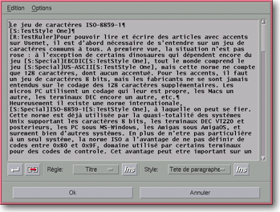
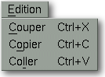
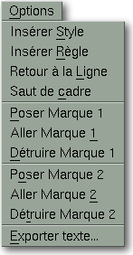

<!-- Documentation Xclamation (c)1994-2000 AXENE contact axene@axene.org>
<html>

<head>
<title>Editeur de texte</title>
</head>

<body BGCOLOR="#FFFFFF" BACKGROUND="Images/back.gif" TEXT="#000000">

<p ALIGN="right">  </p>

<p><br>
<br>
L'éditeur de texte permet de créer ou de modifier le texte d'un cadre. Pour pouvoir
accéder à cet éditeur, il faut qu'il n'y ait qu'un seul cadre sélectionné dans le
document actif et ce cadre doit être vide ou contenir déjà un texte. Il existe trois
méthodes pour ouvrir l'éditeur&nbsp;: soit en cliquant sur le premier <a HREF="HBar_Text.html#editor_icon">bouton icône</a> de la barre horizontale d'icônes de
gestion de texte, soit par le <a HREF="Menu_Context.html#cm_frame_empty">menu contextuel
pour cadre vide</a>, soit par le <a HREF="Menu_Context.html#cm_editor">menu contextuel
pour cadre texte</a>. <br>
<br>
</p>

<hr>

<p align="center"><br>
 <br>
<small><i>Photo d'écran&nbsp;: Editeur de texte </i></small></p>

<p><br>
</p>

<hr>

<p><br>
</p>
<a NAME="menu_bar">

<h3>Barre de menu&nbsp;:</h3>
</a>

<ul>
  <li><a NAME="edition_menu">le menu <i>&quot;Edition&quot;</i> contient trois entrées pour
    la gestion du presse-papiers&nbsp;: </a><p align="center"> </p>
    <ol>
      <li><a NAME="cut_menu_entry"><i>&quot;Couper&quot;</i> permet de sauvegarder, dans le
        presse-papiers, la zone de texte sélectionnée de l'éditeur et efface cette zone de
        texte. </a><br>
        &nbsp;</li>
      <li><a NAME="copy_menu_entry"><i>&quot;Copier&quot;</i> permet de sauvegarder dans le
        presse-papiers, la zone de texte sélectionnée de l'éditeur sans effacer le texte. </a><br>
        &nbsp;</li>
      <li><a NAME="paste_menu_entry"><i>&quot;Coller&quot;</i> permet de restituer, à l'endroit
        du curseur texte, le bloc de texte sauvé depuis le dernier <i>&quot;couper&quot;</i> ou <i>&quot;copier&quot;</i>.
        </a><br>
        &nbsp;</li>
    </ol>
  </li>
  <li><a NAME="options_menu">le menu <i>&quot;Options&quot;</i> propose différentes
    facilités de gestion du texte&nbsp;: </a><p align="center"> </p>
    <ol>
      <li><a NAME="insert_font_menu_entry"><i>&quot;Insérer Style&quot;</i> a la même fonction
        que le </a><a HREF="Box_Editor.html#font_ins_icon">second bouton icône <i>&quot;Ins&quot;</i></a>.
        <br>
        &nbsp;</li>
      <li><a NAME="insert_paragraph_menu_entry"><i>&quot;Insérer Règle&quot;</i> a la même
        fonction que le </a><a HREF="Box_Editor.html#paragraph_ins_icon">premier bouton icône <i>&quot;Ins&quot;</i></a>.
        <br>
        &nbsp;</li>
      <li><a NAME="insert_new_line_menu_entry"><i>&quot;Retour à la ligne&quot;</i> a la même
        fonction que le </a><a HREF="Box_Editor.html#new_line_icon">premier bouton icône</a> de
        la barre du bas. <br>
        &nbsp;</li>
      <li><a NAME="insert_frame_break_menu_entry"><i>&quot;Saut de cadre&quot;</i> a la même
        fonction que le </a><a HREF="Box_Editor.html#frame_break_icon">second bouton icône</a> de
        la barre du bas. <br>
        &nbsp;</li>
      <li><a NAME="drop_mark_menu_entry"><i>&quot;Poser Marque 1&quot;</i> et <i>&quot;Poser
        Marque 2&quot;</i> permettent de baliser la position du curseur dans le texte par une des
        deux marques. On ne voit pas la marque mais elle repère la position du curseur. </a><br>
        &nbsp;</li>
      <li><a NAME="go_to_mark_menu_entry"><i>&quot;Aller Marque 1&quot;</i> et <i>&quot;Aller
        Marque 2&quot;</i> permettent de positionner le curseur texte à l'endroit où ont été
        déposées respectivement les marques 1 et 2. </a><br>
        &nbsp;</li>
      <li><a NAME="destroy_mark_menu_entry"><i>&quot;Détruire Marque 1&quot;</i> et <i>&quot;Détruire
        Marque 2&quot;</i> permettent d'enlever le marquage des marques respectives 1 et 2. </a><br>
        &nbsp;</li>
      <li><a NAME="export_text_menu_entry"><i>&quot;Exporter texte...&quot;</i> appelle le
        sélecteur de fichier '</a><a HREF="Box_FS_Export_Text.html">Exportation du texte</a>' qui
        permet de sauver, individuellement, le texte dans un fichier. </li>
    </ol>
  </li>
</ul>

<p><br>
<a NAME="text_textfield"></a> </p>

<h3>Zone de saisie&nbsp;:</h3>

<ul>
  <p>Le champ texte contient le texte du cadre sélectionné. Les enrichissements du texte
  (styles, règles, saut de cadre, retour à la ligne et fin de paragraphe) apparaissent
  dans l'éditeur sous forme de balises, mais celles-ci ne seront pas affichées dans le
  cadre. Une balise réagit comme un seul caractère&nbsp;: pour en détruire une, il suffit
  de positionner le curseur devant et d'appuyer sur la touche <i>&quot;Del&quot;</i>. <br>
  Pour insérer les balises, il faut utiliser la barre de menu ou les boutons icônes de la
  barre horizontale du bas. <br>
  Cette zone de saisie fonctionne comme tous les champs textes, il est notamment possible
  d'y rentrer les caractères accentués du <b>jeu de caractères ISO Latin 1</b>, que ce
  soit avec le clavier si vous possédez les touches correspondantes, soit avec les <a HREF="Keyboard.html#special_car">caractères composés</a>. </p>
</ul>

<p><br>
</p>

<h3>Barre de contrôle inférieure&nbsp;:</h3>

<ul>
  <li> <a NAME="new_line_icon">le premier bouton icône
    de la barre permet d'<b>insérer un retour à la ligne</b> sans changement de paragraphe
    dans le texte. Cela se répercute dans la zone de saisie par l'insertion de la balise
    &quot;<tt>[CR]</tt>&quot;. Ce <i>&quot;retour à la ligne&quot;</i> se différencie de
    celui obtenu par la touche &quot;Return&quot; ou &quot;Entrée&quot; par le fait qu'il ne
    signifie pas la fin d'un paragraphe&nbsp;: il permet de pouvoir justifier la dernière
    ligne d'un paragraphe ou l'unique ligne d'un titre. </a><br>
    &nbsp;</li>
  <li> <a NAME="frame_break_icon">le second bouton
    icône de la barre permet d'<b>insérer un saut de cadre</b> dans le texte. Cela se
    répercute dans la zone de saisie par l'insertion de la balise &quot;<tt>[Frame&nbsp;Break]</tt>&quot;.
    Poser un <i>&quot;saut de cadre&quot;</i> permet, lorsque plusieurs cadres textes sont
    chaînés, de ne pas attendre qu'un cadre soit entièrement rempli avant de laisser le
    texte s'écouler dans le cadre suivant de la chaîne. </a><br>
    &nbsp;</li>
  <li><a NAME="paragraph_list">la liste déroulante <i>&quot;Règle&quot;</i> contient la
    liste des règles définies dans la boîte de dialogue '</a><a HREF="Box_Paragraph.html">
    Composition des règles</a>'. Elle permet de <b>sélectionner la règle</b> qui sera
    insérée dans le texte lorsque l'on cliquera sur le premier bouton icône <i>&quot;Ins&quot;</i>
    juste à droite de la liste ou dans le menu <i>&quot;Options / Insérer Règle&quot;.</i>
    Quand on ouvre l'éditeur de texte, la règle sélectionnée de la liste correspond à la
    règle qui prend effet sur le début du texte. <br>
    &nbsp;</li>
  <li><a NAME="paragraph_ins_icon">le premier bouton icône <i>&quot;Ins&quot;</i> permet d'<b>insérer
    la règle sélectionnée</b> de la liste déroulante dans le texte. Cela se répercute
    dans la zone de saisie par l'insertion de la balise &quot;<tt>¶[R:nom&nbsp;de&nbsp;la&nbsp;règle]</tt>&quot;.
    Une règle force un saut de paragraphe car celle-ci agit sur l'intégralité d'un ou
    plusieurs paragraphes. </a><br>
    &nbsp;</li>
  <li><a NAME="font_list">la liste déroulante &quot;<i>Style</i>&quot; contient la liste des
    styles définis dans la boîte de dialogue '</a><a HREF="Box_Font.html">Composition des
    styles</a>'. Elle permet de <b>sélectionner le style</b> qui sera inséré dans le texte
    lorsque l'on cliquera sur le second bouton icône <i>&quot;Ins&quot;</i> juste à droite
    de la liste ou dans le menu <i>&quot;Options / Insérer Style&quot;</i>. Quand on ouvre
    l'éditeur de texte, le style sélectionné de la liste correspond au style qui prend
    effet sur le début du texte. <br>
    &nbsp;</li>
  <li><a NAME="font_ins_icon">le second bouton icône &quot;<i>Ins</i>&quot; permet d'<b>insérer
    le style sélectionné</b> de la liste déroulante dans le texte. Cela se répercute dans
    la zone de saisie par l'insertion de la balise &quot;<tt>[S:nom&nbsp;du&nbsp;style]</tt>&quot;.
    Un style prend effet de son point d'insertion jusqu'au point d'insertion du style suivant.
    </a></li>
</ul>

<p><br>
</p>

<h3>Partie inférieure de l'éditeur&nbsp;:</h3>

<ul>
  <li><a NAME="button_ok"><i>&quot;Ok&quot;</i> <b>accepte tous les changements</b> dans le
    texte et ferme l'éditeur. </a><br>
    &nbsp;</li>
  <li><a NAME="button_cancel"><i>&quot;Annuler&quot;</i> <b>ferme l'éditeur</b> en gardant le
    texte initial. </a></li>
</ul>

<p><br>
</p>

<hr>

<p ALIGN="right"></p>
</body>
</html>
